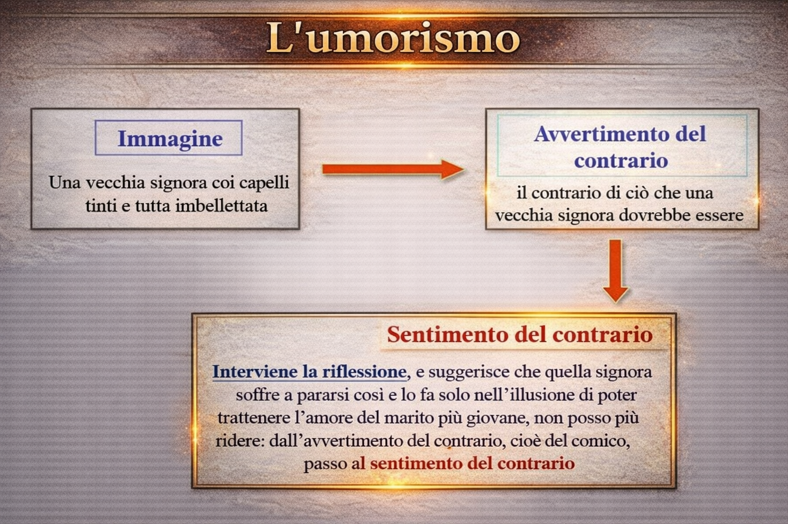
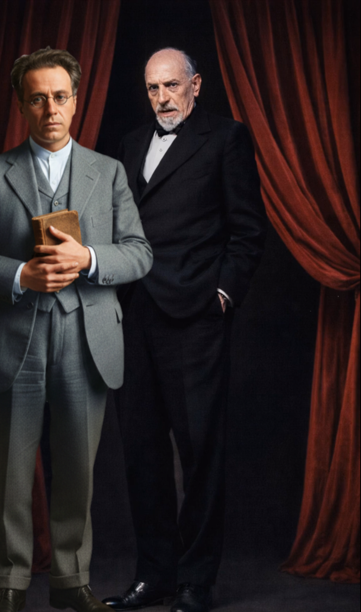
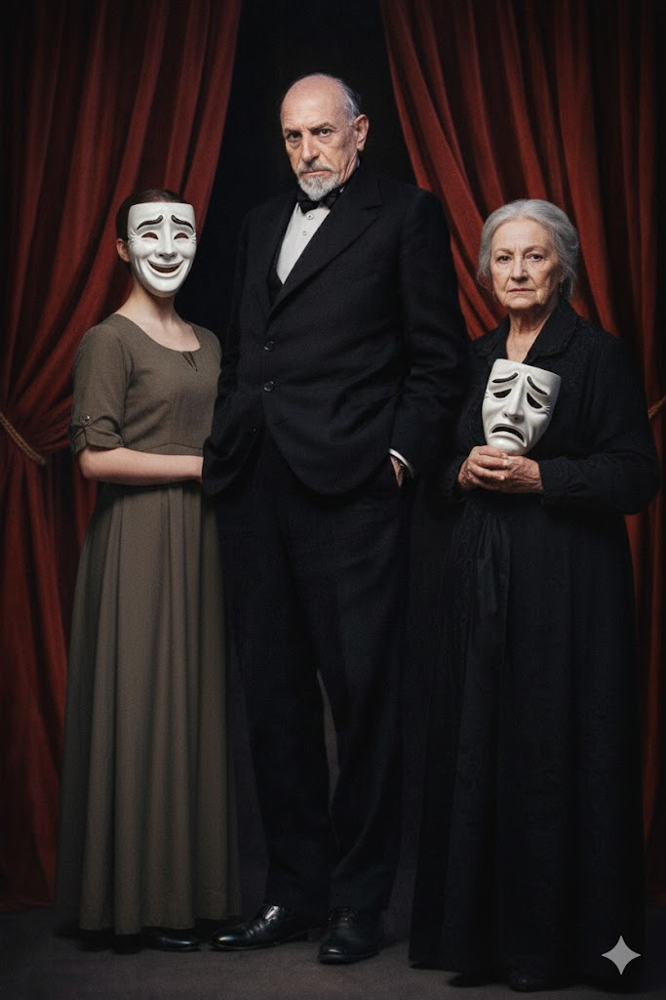
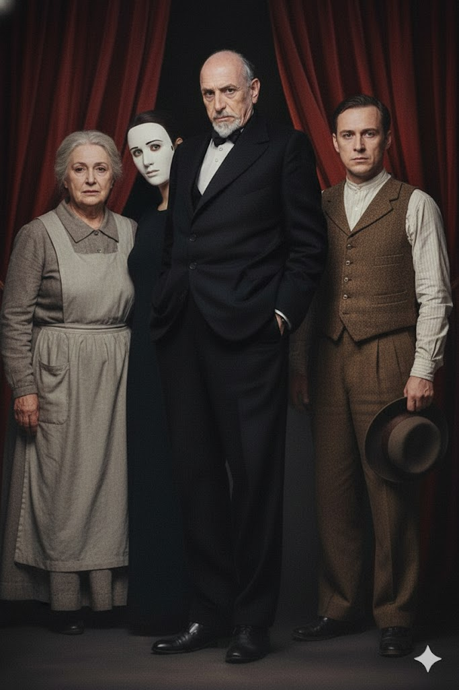

Schema
Pirandello – Visione del mondo
Vita, forma, maschera e crisi dell’identità nella modernità.
Questa PWA ricostruisce l’intero percorso su Luigi Pirandello nella stessa architettura didattica: lezioni autonome, mappe come rinforzo visivo, evidenziazione del testo, appunti integrati e modalità concentrazione.
La sezione Pirandello adotta la stessa ossatura tecnica e funzionale della famiglia PWA: ordine di lettura, strumenti attivi e navigazione coerente.
Una pagina per ogni nucleo del percorso.
Vita, forma, maschera e crisi dell’identità nella modernità.
Avvertimento e sentimento del contrario: la poetica umoristica.
Identità, fuga, maschere sociali e impossibilità di rinascere.
Frantumazione dell’io e dissoluzione dell’identità personale.
Relatività della verità e conflitto tra apparenza e realtà.
Teatro nel teatro, metateatro e crisi della rappresentazione.
Il laboratorio narrativo del quotidiano e delle maschere.
Le strutture narrative dei romanzi e le loro ossessioni tematiche.
Forma scenica, conflitto e rivoluzione del linguaggio teatrale.
Sintesi del percorso: forma, maschera, incomunicabilità e modernità.
Ogni schema è pensato come rinforzo visivo del testo, non come decorazione.
Vita, forma, maschera e crisi dell’identità nella modernità.

Avvertimento e sentimento del contrario: la poetica umoristica.

Identità, fuga, maschere sociali e impossibilità di rinascere.

Frantumazione dell’io e dissoluzione dell’identità personale.

Relatività della verità e conflitto tra apparenza e realtà.

Teatro nel teatro, metateatro e crisi della rappresentazione.

Il laboratorio narrativo del quotidiano e delle maschere.

Le strutture narrative dei romanzi e le loro ossessioni tematiche.

Forma scenica, conflitto e rivoluzione del linguaggio teatrale.

Sintesi del percorso: forma, maschera, incomunicabilità e modernità.